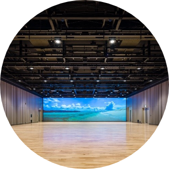
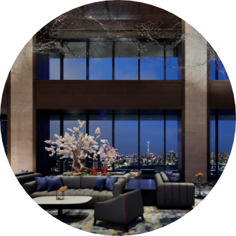
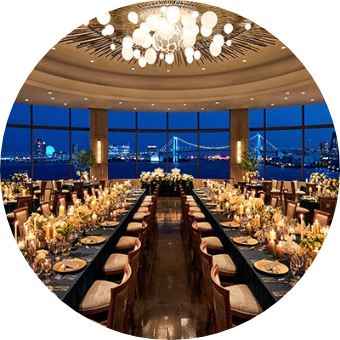
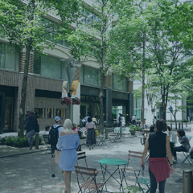
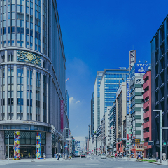
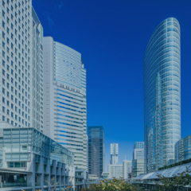
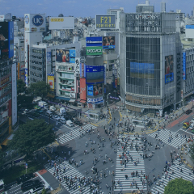

主要エリア
主要エリア


浜松町・竹芝・芝浦
浜松町・竹芝・芝浦エリアは寺社、庭園、公園の緑、東京湾岸の水辺空間を有する都心の光あふれるエリアです。
歴史文化施設が集積し、羽田空港や都心からのアクセス性に優れ、交通結節点となる浜松町エリア、デジタルコンテンツ系企業が集積し、舟運の拠点、エンタメ資源、親水空間を有し、スマートシティ実現への取組みを進める新しい竹芝エリア、次世代エネルギー拠点と東京港を望むアフターコンベンション機能を有する芝浦エリア、以上3つのエリアが一体となり、エリアマネジメント団体や開発事業者が連携し、新サービスの実装により多様な開催ニーズに対応します。
MICE 情報

コンベンション施設
（会議施設数）
18
会議施設と展示施設の双方を兼ね備えたエリアです。様々な目的、ニーズに対して、多様な規模で対応することが可能です。また、羽田空港、東京都心から近接し、抜群のアクセス性を誇ります。

宿泊
（客室数）
2826
東京湾岸エリアを中心に五つ星を獲得したラグジュアリーなものからビジネスタイプに至るまで、幅広いグレードのホテルを有しており、お客様の様々なニーズに合わせた対応が可能です。

宴会・パーティー
（宴会場数）
95
エリア内にはさまざまなタイプの宴会に即した大、中、小の会場がございます。また、東京ポートシティ竹芝やアトレ竹芝などの商業施設のレストランやアミューズメント施設、ホテル、屋形船、文化財などもあり、多彩な宴会が楽しめます。また、３密を避けるための分散型の宴会開催を提案するなど、お客様のニーズを踏まえたサポートを提供いたします。
浜松町・竹芝・芝浦のケーススタディ
01
ミーティング
全国エリアマネジメントネットワークシンポジウム
2020年9月、全国エリアマネジメントネットワークの年次総会、シンポジウムと懇親会が開催されました。ポートホールには約100名の参加者が来場し、国内各地のパネリストと参加者をオンラインで結んだハイブリッド型のイベントとなりました。シンポジウム後はWATERS takeshibaから日の出ふ頭に至るエクスカーションが開催され、参加者に本エリアの水辺空間の魅力を体感していただく機会となりました。最後は「Hi-NODE」内で懇親会が行われ、水辺の開放的な雰囲気を満喫しながらの交流機会を演出することが出来ました。
関連施設
浜松町・竹芝・芝浦のケーススタディ
02
イベント
江戸夜会
江戸夜会は、旧芝離宮恩賜庭園を舞台として、先端のクリエイティブやテクノロジーと掛け合わせ、日本庭園や史跡等の夜の魅力を「和」のテイストで引きだすライトアップイベントで、これまで2年にわたり、夏と秋の2回ずつ開催されました。文化財庭園の樹木や燈篭がスポットライトやプロジェクションマッピングによって美しく浮かび上がり、環境音楽とともに新しい日本文化を体感することが出来ます。また、園内では和食やお酒を楽しめる屋台や座席も用意され、新しいテクノロジーと文化が共存するMICEイベントとなりました。
関連施設
浜松町・竹芝・芝浦のケーススタディ
03
ミーティング
浜松町ハーベストフェスタ-浜祭-（はままつり）
浜松町エリアの大型イベント「浜松町ハーベストフェスタ-浜祭-」は、2007年11月3日、4日の”文化放送の日”に初開催され、2019年で13回目（※2020年は開催中止）を迎えました。2019年のテーマは「文化と食の大収穫祭」。令和を迎え、イベント開始以来続いた「グリーンサウンドフェスタ」から「ハーベストフェスタ」にブランド変更し、”食の秋”にふさわしく、文化放送パーソナリティ太鼓判の美味しいものを取り揃えるほか、食を通じた「人と人のつながり、地域のつながり」、「社会課題解決」をコンセプトに、様々なプログラムを展開しました。
関連施設
MICEライターが見るエリアの魅力


主要施設
日の出ふ頭小型船ターミナル（Hi-NODE）
エリア内のユニークベニュー施設
- 


- 
- 


- 